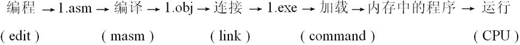
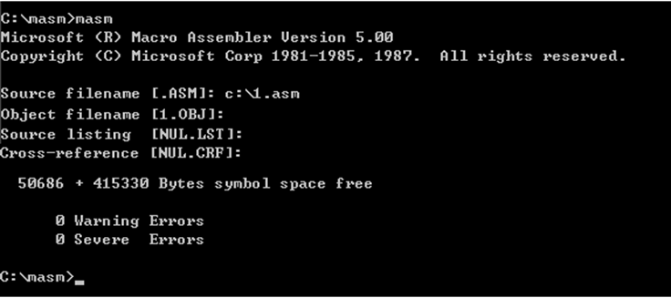
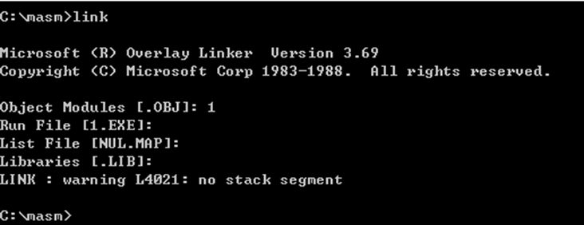
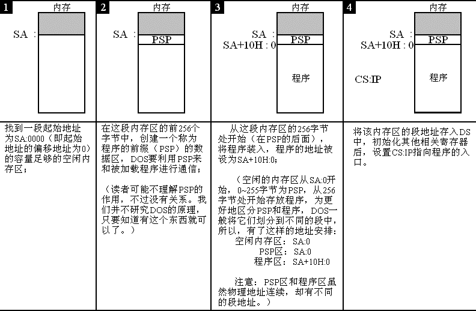

一个源程序从写出到执行的过程
简要过程： 编写–>编译–>链接–>执行
- 编写：使用文本编辑器用汇编语言编写源程序
- 编译：对源程序编译产生目标文件
- 连接：使用连接程序对目标文件进行临界产生可执行文件
- 执行：执行可执行文件（包括程序机器码，数据和相关描述信息）

![[50]](http://qzonestyle.gtimg.cn/qzone/qzactStatics/imgs/20171122191630_ff8fef.jpg "[50]picture 404!")
[50]picture 404!
源程序
包括汇编指令和伪指令
汇编指令：对应的机器码指令最终可为CPU执行。
伪指令：由编译器来执行的指令，编译器根据伪指令来进行相关的编译工作。
一些例子：
segment和ends：定义一个段,每个段必须有一个名称来标识，即 段名 segment、段名 ends。
end:程序结束标记，如果程序写完不加伪指令end，则编译器不知道程序在何处结束。
assume含义为假设，它假设某一段寄存器和程序中某一个用segment定义的段相关联。
程序返回：一个程序结束后，讲CPU的控制权交还给使得它得以运行的程序，这个过程叫，程序返回。
在程序末尾加上返回的程序段：
1 | mov ax,4c00H |
编译源程序
使用masm命令可以对我们的asm文件进行编译，编译过程中会生成目标文件（.obj），也可以选择是否尝试中间文件，如交叉引用文件（.crf）、列表文件（.list）

连接
在对源程序进行编译得到目标文件后，我们需要对目标文件进行连接，从而得到可执行文件。
使用link命令可以将obj文件连接生成可执行exe文件，其中可以选择产生中间结果，如映像文件（.map），也可以选择相应的库文件（.lib），库文件中包含了可以调用的子程序。

用debug对程序执行过程进行跟踪
EXE文件中程序的加载过程

程序加载后，ds中存放着程序所在内存区的段地址，这个内存区的偏移地址为 0 ，则程序所在的内存区的地址为：ds:0;
这个内存区的前256个字节中存放的是PSP，dos用来和程序进行通信。从256字节处向后的空间存放的是程序。
所以，我们从ds中可以得到PSP的段地址SA，PSP的偏移地址为 0，则物理地址为SA×16+0。因为PSP占256（100H）字节，所以程序的物理地址是：SA×16+0+256=SA×16+16×16=（SA+16）×16+0，可用段地址和偏移地址表示为：SA+10:0。